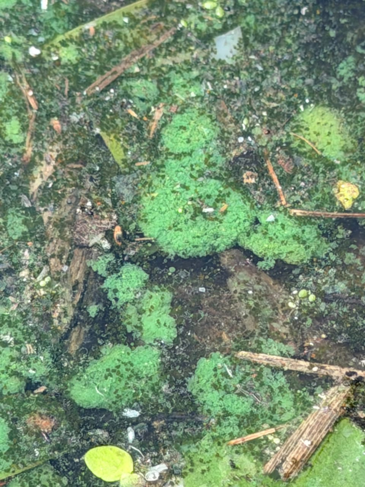
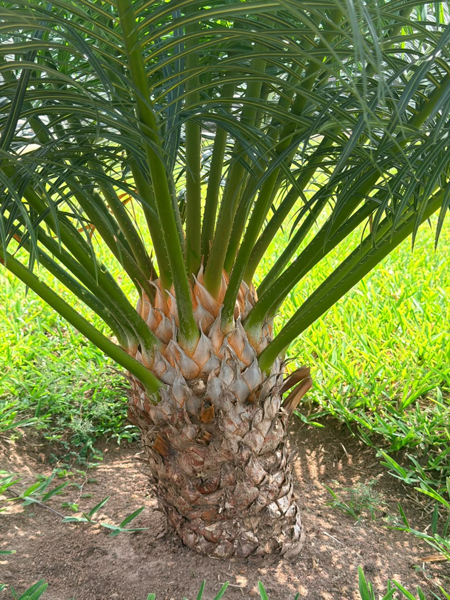
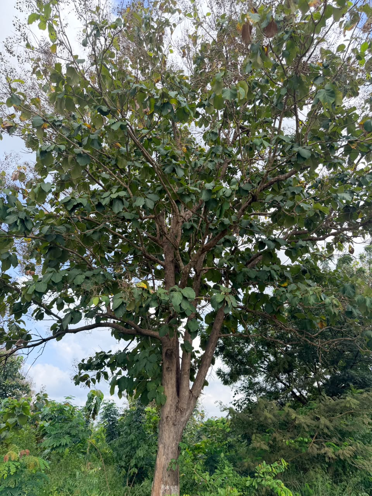

01. Algues
Des organismes photosynthétiques principalement aquatiques.
À découvrir : la vie aquatique et la reproduction.
Découvrir les algues →EXPLOREZ LE MONDE VÉGÉTAL
Découvrez comment les plantes se sont diversifiées au cours de l'évolution, de la vie aquatique à la colonisation des milieux terrestres.

Des organismes photosynthétiques principalement aquatiques.
À découvrir : la vie aquatique et la reproduction.
Découvrir les algues →
Des végétaux terrestres sans véritables vaisseaux conducteurs.
Innovation : adaptation à la vie terrestre.
Découvrir les mousses →
Des plantes avec racines, tiges et feuilles développées.
Innovation : tissus conducteurs.
Découvrir les fougères →
Des plantes à graines non enfermées dans un fruit.
Innovation : pollen et graines.
Découvrir les gymnospermes →
Des plantes à fleurs adaptées à de nombreux milieux.
À découvrir : fleurs, fruits et adaptation.
Découvrir les graminées →
Des plantes à fleurs présentant une grande diversité de formes.
À découvrir : fleurs, fruits et graines.
Découvrir les dicotylédones →